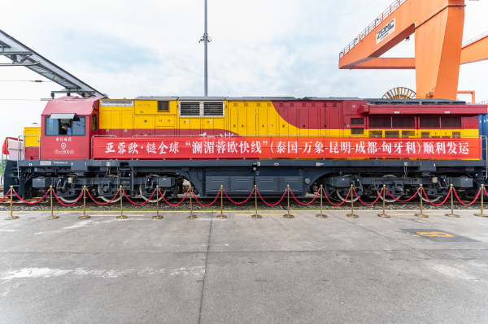
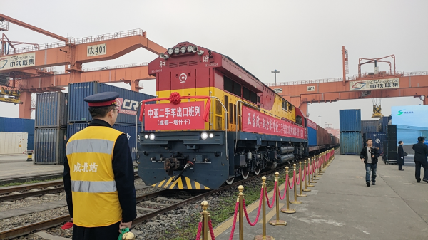

ຂ່າວລາວ. ຢູ່ສູນວາງສະແດງທ່າກຳປັ່ນລົດໄຟສາກົນເສີນຕູ, ຂະບວນລົດໄຟສາກົນທີ່ກຳລັງແລ່ນຢູ່ໄດ້ສະແດງໃຫ້ເຫັນຜ່ານໜ້າຈໍໃຫຍ່ແບບ real time. ນັບແຕ່ປີນີ້ເປັນຕົ້ນມາ, ຂະບວນລົດໄຟສາກົນເສີນຕູ ໄດ້ສືບຕໍ່ ຂະຫຍາຍຂີດ ຄວາມສາມາດການເຂົ້າເຖິງເຄືອຂ່າຍຂອງຕົນ. ໃນໄຕມາດທໍາອິດຂອງປີ 2025, ຂະບວນລົດໄຟສາກົນເສີນຕູ ເປີດແລ່ນໄດ້ 1.380 ຂະບວນ. ໃນນັ້ນ, ມີປະລິມານການຂົນສົ່ງສິນຄ້າຂາເຂົ້າ-ຂາອອກ 417.000 ໂຕນ, ເພີ່ມຂຶ້ນ 11,4% ເມື່ອທຽບໃສ່ໄລຍະດຽວກັນ; ຈຳນວນຂະບວນລົດໄຟຈີນ-ລາວເພີ່ມຂຶ້ນ 40% ເມື່ອທຽບໃສ່ໄລຍະດຽວກັນ, ໄດ້ບັນລຸ "ການເລີ່ມຕົ້ນດ້ວຍໝາກຜົນທີ່ດີ" ໃນໄຕມາດທຳອິດ.
ໃນເສັ້ນທາງຈີນ-ລາວ, ສົມທົບກັບຄວາມຕ້ອງການຕົວຈິງຂອງການຄ້າອາຊຽນ, ເພີ່ມຄວາມຖີ່ຂອງການດຳເນີນງານ "ແມ່ນນໍ້າລ້ານຊ້າງແມ່ນ້ຳຂອງ-ເສີນຕູ", ເພີ່ມທະວີການຂົນສົ່ງສິນຄ້າຂາອອກເຊັ່ນ: ເຄື່ອງໃຊ້ໃນເຮືອນ, ເຄື່ອງຈັກ, ອຸປະກອນ ແລະ ອື່ນໆ, ສິນຄ້າຂາອອກເຊັ່ນ: ແຮ່ເຫລັກ, ຝຸ່ນໂປຕາສ, ຜະລິດຕະພັນກະສິກໍາ ແລະ ອື່ນໆເຊື່ອມໂຍງແບບຄູ່ຂະໜານ. ສິ່ງທີ່ຄຸ້ມຄ່າທີ່ຈະກ່າວເຖິງແມ່ນ “ຊ່ອງທາງດ່ວນ ແມ່ນ້ຳລ້ານຊ້າງແມ່ນ້ຳຂອງ-ເສີງຕູ-ເອີຣົບ” ໃນຖານະເປັນຜະລິດຕະພັນທີ່ສໍາຄັນຂອງຂະບວນລົດໄຟຈີນ-ລາວ ຂອງທ່າກຳປັ່ນລົດໄຟສາກົນເສີນ ຕູ, ມັນບໍ່ພຽງແຕ່ເປັນການເປີດຊ່ອງທາງອາຊີ-ເສີງຕູ-ເອີຣົບ ຈາກອາຊຽນໄປເອີຣົບໂດຍຜ່ານຄຸນໝິງ ແລະ ເສີນຕູ ເທົ່ານັ້ນ, ແຕ່ຍັງສະໜອງທິດທາງການແກ້ໄຂຕ່ອງໂສ້ ທີ່ກໍາໜົດເອງຢ່າງເຕັມຮູບແບບໃຫ້ແກ່ລູກຄ້າ.
ໂດຍຜ່ານ “ຊ່ອງທາງດ່ວນ ແມ່ນ້ຳລ້ານຊ້າງແມ່ນ້ຳຂອງ-ເສີນຕູ-ເອີຣົບ”, ສິນຄ້າຂອງພວກເຮົາອອກ ຈາກເມືອງ ເສີງຕູ 3 ມື້ກໍມາຮອດນະຄອນຫລວງວຽງຈັນ ສປປ ລາວ; ໄລຍະເວລາການຂົນສົ່ງທັງໝົດ ຈາກປະເທດໄທ ໄປ ເອີຣົບ ໂດຍຜ່ານເມືອງເສີນຕູ ແມ່ນປະມານ 15 ມື້ ເຊິ່ງປະຢັດເວລາໂດຍສະເລ່ຍ 15 ມື້ ເມື່ອທຽບກັບການຂົນສົ່ງ ທາງທະເລແບບດັ້ງເດີມ. ທ່ານ Du Peiling ຜູ້ອໍານວຍການບໍລິຫານຂອງ ບໍລິສັດ Sichuan Xinbang Decheng ຂົນສົ່ງສາກົນ ກ່າວວ່າ: "ຄວາມໝັ້ນຄົງ ແລະ ຄວາມທັນເວລາຂອງລົດໄຟຈີນ-ລາວ ໄດ້ສະໜອງການສະໜັບສະໜູນທີ່ ສໍາຄັນ ສໍາລັບການຂະຫຍາຍໄປສູ່ຕະຫລາດອາຊີຕາເວັນອອກສຽງໃຕ້ຂອງພວກເຮົາ. ໃນໄຕມາດທໍາອິດຂອງປີ 2025, ພວກເຮົາໄດ້ຂົນສົ່ງ ສິນຄ້າ 1.388 ຕູ້, ເພີ່ມຂຶ້ນ 80% ເມື່ອທຽບກັບໄລຍະດຽວກັນ." ຂະນະດຽວກັນ, ຂະບວນລົດໄຟສາກົນເສີນຕູ ຍັງໄດ້ "ພະຍາຍາມຫລາຍດ້ານ" ເຊັ່ນ: ເສັ້ນທາງຈີນ-ເອີຣົບ, ເສັ້ນທາງຈີນ-ອາຊີ ແລະ ເສັ້ນທາງຕາເວັນອອກ. ໃນນັ້ນ, ເສັ້ນທາງຈີນ-ເອີຣົບ ຂະບວນເສີນຕູ-ເອີຣົບ ໄດ້ຮັກສາ ຄວາມໝັ້ນທ່ຽງໃນແຕ່ລະອາທິດເປີດການເດີນລົດໄປໜຶ່ງຖ້ຽວ-ກັບໜຶ່ງຖ້ຽວ, ໃນກ້າວດຽວກັນກໍຂະຫຍາຍຂະບວນ ເສີງຕູ-ເອີຣົບ ອີກຂະບວນໜຶ່ງເອີ້ນວ່າ ຂະບວນລົດໄຟມິນ(ນະຄອນຫລວງປະເທດເບລາຣູດຊີ), ບັນລຸການເປີດບໍລິ ການຂະບວນລາຍສັບປະດາເປັນປົກກະຕິ ໂດຍກໍານົດເວລາສັ້ນລົງ ເປັນ 10 ມື້, ເມື່ອທຽບໃສ່ເສັ້ນທາງປົກກະຕິ ປະສິດທິພາບເວລາເພີ່ມຂຶ້ນ 30%; ເສັ້ນທາງຈີນ-ອາຊີ ຂະບວນທໍາອິດຈາກເມືອງເສີນຕູ ຫານະຄອນຫລວງ ທາສເຄນ ປະເທດອຸສເບກີສະຖານ ເປັນຂະບວນສົ່ງອອກລົດມືສອງຈີນ-ອາຊີ ໄດ້ເພີ່ມສະຖານີໃໝ່ຄື ສະຖານີ ດູຊານເບຂອງທາຈິກິດສະຖານ, ຊຸກຍ້ການສົ່ງອອກລົດມືສອງຄຸນນະພາບສູງໄປຍັງຕະຫລາດຈີນ-ອາຊີ ດ້ວຍຊ່ອງທາງການຂົນສົ່ງທີ່ໝັ້ນຄົງກວ່າ ແລະ ປະສິດທິພາບຂອງການສົ່ງມອບໄວຂຶ້ນ; ເສັ້ນທາງຕາເວັນອອກ, ພວກເຮົາ ຈະລົງເລິກການຮ່ວມມືກັບທ່າເຮືອຢຽນທຽນ ເພື່ອພັດທະນາຊ່ອງທາງການຂົນສົ່ງທາງລົດໄຟ-ທາງທະເລ, ເປີດເສັ້ນ ທາງຂົນສົ່ງທາງລົດໄຟ-ທາງ ທະເລຫລາຍຮູບແບບ ທີ່ເຊື່ອມໂຍງເອີຣົບ, ສະຫະລັດ ແລະ ອາຟຣິກາ ໂດຍຜ່ານ ທ່າເຮືອຢຽນທຽນ ແລະ ອະນຸຍາດໃຫ້ບັນດາສິນຄ້າທີ່ມີຄຸນນະພາບສູງຈາກແຂວງເສສວນ ໄປຍັງຕ່າງປະເທດ. ໃນຖານະເປັນລູກຄ້າທີ່ສໍາຄັນຂອງຂະບວນລົດໄຟມິນ ເສີນຕູ-ເອີຣົບ, ຂະໜາດທຸລະກິດຂອງ Neptune Logistics ໃນເສີນຕູ ໄດ້ຂະຫຍາຍຕົວຢ່າງໝັ້ນທ່ຽງ, ມີຈໍານວນລູກຄ້າທີ່ສໍາຄັນສະສົມໃນແຕ່ລະປີ, ມີສິນຄ້າ ຈໍານວນມະຫາສານເຊັ່ນ: ຊຸດເຕົາອົບໄຟຟ້າ, ເຄື່ອງສີດພົ່ນ ແລະ ສິນຄ້າອື່ນໆ ໄດ້ຂົນສົ່ງຜ່ານຂະບວນລົດໄຟຈີນ-ເອີຣົບ ເຂົ້າສູ່ເອີຣົບ. ທ່ານ Chen Jianfeng, ຜູ້ຈັດການທົ່ວໄປຂອງ Neptune Logistics ປະຈໍາພາກພື້ນ ຕາເວັນຕົກສຽງໃຕ້ກ່າວວ່າ "ພຽງແຕ່ໃນໄຕມາດທໍາອິດຂອງປີນີ້, ປະລິມານການຂົນສົ່ງຂອງພວກເຮົາໄດ້ເພີ່ມຂຶ້ນ 20% ເມື່ອທຽບໃສ່ໄລຍະດຽວກັນ.
ຢູ່ສະຖານີສູນຕູ້ຄອນເທນເນີເສີນຕູ, ພາຫະນະພະລັງງານໃໝ່ມືສອງຂອງຈີນຊຸດທີ່ໜຶ່ງກຳລັງ ຖືກບັນຈຸໃສ່ ລົດໄຟຂະບວນພິເສດ ເພື່ອກະກຽມທີ່ຈະສົ່ງໄປຍັງນະຄອນຫລວງທາສເຄນຂອງ ອຸສເບກີສະຖານ. ທ່ານ Li Jing, ຮອງຜູ້ຈັດການທົ່ວໄປຂອງ Silk Road Easy Buy ເຊິ່ງເປັນຜູ້ດໍາເນີນການຖານສົ່ງອອກລົດມືສອງ Shuangliu ກ່າວວ່າ: “ຕະຫລາດຈີນ-ອາຊີ ມີຄວາມຕ້ອງການສູງສໍາລັບລົດ ມືສອງທີ່ມີລາຄາຍ່ອມເຍົາ ແຕ່ສະມັດທະນະສູງ. ໃນເດືອນແລ້ວນີ້, ຂະບວນລົດໄຟທຳອິດທີ່ສົ່ງອອກລົດມືສອງຈີນ-ອາຊີ ໄດ້ເປີດການເດີນລົດເປັນ ປົກກະຕິ ເຊິ່ງເປັນການເປີດຊ່ອງທາງການຂາຍໃໝ່ໃຫ້ແກ່ວິສາຫະກິດ. ” ປັດຈຸບັນ, ຂະບວນລົດໄຟສາກົນເສີນຕູ ພວມຕັ້ງໜ້າຊຸກຍູ້ການກໍ່ສ້າງຕາໜ່າງຄົມມະນາຄົມສາກົນ ຫລາຍຮູບ ແບບຄື: “8 ທິດທາງໃຫຍ່, ເສັ້ນທາງລະຫວ່າງປະເທດ 20 ເສັ້ນ ແລະ ເສັ້ນທາງຍ່ອຍຫລາຍສາຍ” ເຊິ່ງໄດ້ແຜ່ຂະຫຍາຍໄປຍັງ 50 ປະເທດໃນທະວີບຢູເຣເຊຍ, 120 ຕົວເມືອງຢູ່ຕ່າງປະເທດ ແລະ 30 ຕົວເມືອງພາຍໃນປະເທດຈີນ, ກາຍເປັນຊ່ອງທາງການຄ້າທີ່ສໍາຄັນທີ່ເຊື່ອມໂຍງພາກພື້ນຕາເວັນຕົກກັບ ບັນດາປະເທດທີ່ນອນໃນ ໂຄງການ “ໜຶ່ງແລວໜຶ່ງເສັ້ນທາງ”. ໃນວັນທີ 15 ເມສາ, ຈໍສະແດງຜົນຄຣີສຕໍແຫລວ ຊຸດທີ່ໜຶ່ງກໍາລັງຖືກບັນຈຸໃສ່ຕູ້ຄອນເທນເນີ ໃນລານ ພາຍໃນຂອງບໍລິສັດ Chengdu BOE Optoelectronics Technology Co., Ltd ເຊິ່ງຕັ້ງຢູ່ ເຂດຕາເວັນ ຕົກຂອງ Chengdu Hi-tech ຈາກນັ້ນຈະຖືກສົ່ງໄປຍັງທ່າກຳປັ່ນລົດໄຟສາກົນເສີນຕູ ເພື່ອຂຶ້ນຂະບວນລົດ ໄຟເສີນຕູຈີນ-ເອີຣົບ ແລ້ວສົ່ງອອກໄປສູ່ເອີຣົບ. ນັບຕັ້ງແຕ່ປີ 2022 ເປັນຕົ້ນມາ, ແຜງ LCD ຂອງບໍລິສັດ ແລະ ຜະລິດຕະພັນອື່ນໆໄດ້ຖືກສົ່ງ ອອກໄປປະເທດເອີຣົບເຊັ່ນ: ສາທາລະນະລັດເຊັກ, ເຊີເບຍ ແລະ ໂລມາເນຍ ຜ່ານທາງຂະບວນລົດໄຟ ເສີນຕູຈີນ-ເອີຣົບ.
ທ່ານ ນາງ Zheng Qian ຜູ້ຈັດການດ້ານການຂົນສົ່ງຂອງບໍລິສັດ ກ່າວວ່າ: ຂະບວນລົດໄຟຈີນ-ເອີຣົບ ມີຂໍ້ ໄດ້ປຽບທີ່ພົ້ນເດັ່ນໃນດ້ານລາຄາ ແລະ ຄວາມທັນເວລາ, ໄດ້ສະໜອງການຄ້ຳປະກັນທີ່ເຂັ້ມແຂງໃຫ້ກັບທຸລະກິດສົ່ງ ອອກໄປເອີຣົບຂອງບໍລິສັດ. ປັດຈຸບັນ, ເສັ້ນທາງທີ່ພວກເຮົາພວມເດີນຢູ່ນັ້ນມີຄວາມໝັ້ນຄົງທີ່ສຸດ, ດ້ວຍມູນ ຄ່າການ ສົ່ງອອກປະມານ 10 ລ້ານຢວນໃນແຕ່ລະເດືອນ. ເມື່ອບໍ່ດົນມານີ້, ທ່ານ ນາງ Zheng Qian ກໍໄດ້ຮັບຂ່າວທີ່ໜ້າຕື່ນເຕັ້ນອີກເທື່ອໜຶ່ງ: ໃນເດືອນພຶດສະພາ, ຂະບວນລົດໄຟເສີນຕູ ຈີນ-ເອີຣົບ ຈະເປີດຂະບວນລົດໄຟໄປຮອດເມືອງມາຣິດ ເຊິ່ງຈະສະໜອງທາງເລືອກຊ່ອງ ທາງໃໝ່ສໍາລັບຜະລິດຕະພັນຂອງບໍລິສັດ ທີ່ຈະສົ່ງອອກໄປຍັງປະເທດ ແອັດສະປາຍ. ທ່ານ ນາງ Zheng Qian ເຄີຍສະເໜີຢູ່ໃນກອງປະຊຸມສໍາມະນາລູກຄ້າ ຂອງຂະບວນລົດໄຟສາກົນເສີນຕູ ທີ່ຈັດຂຶ້ນໃນເມືອງຊີປາຍຈ່ຽງ ວ່າ: ທ່ານ ນາງ Zheng Qian ຫວັງວ່າຈະໄດ້ຮັບການສະໜູບສະໜູນຫລາຍຂຶ້ນ ຈາກຂະບວນລົດໄຟເສີນຕູ ຈີນ-ເອີຣົບ, ເພື່ອຕອບສະໜອງຄວາມຕ້ອງການການສັ່ງຈອງປະລິມານຫລາຍຂອງບໍລິສັດ ທີ່ຈະສົ່ງໄປຍັງແອັດສະປາຍ ເຊິ່ງຄວາມຕ້ອງການນີ້ໄດ້ຮັບການຕອບສະໜອງຢ່າງໄວວາ.